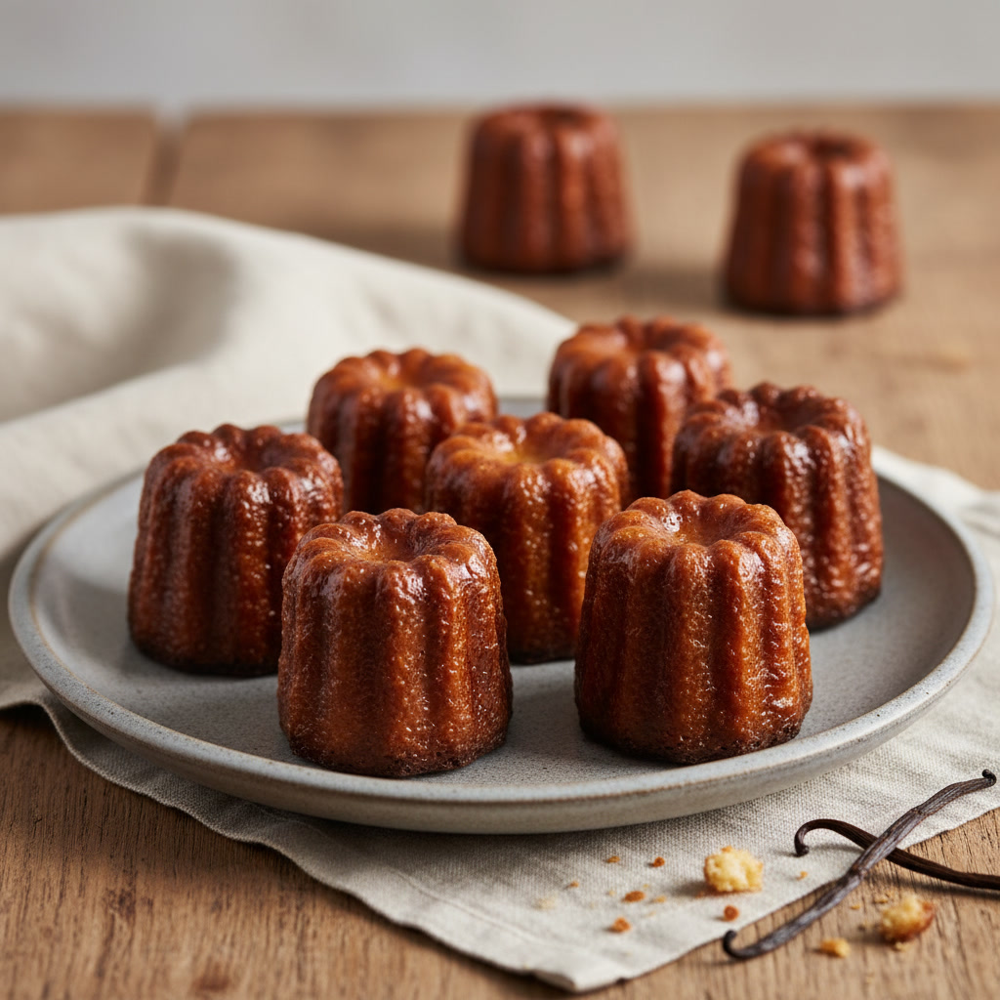
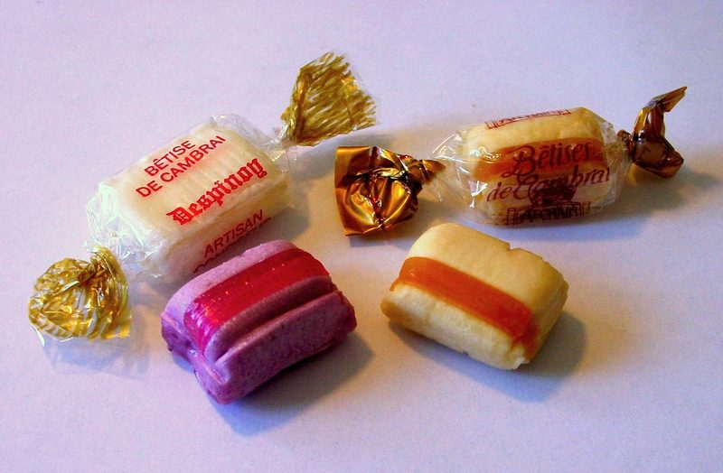
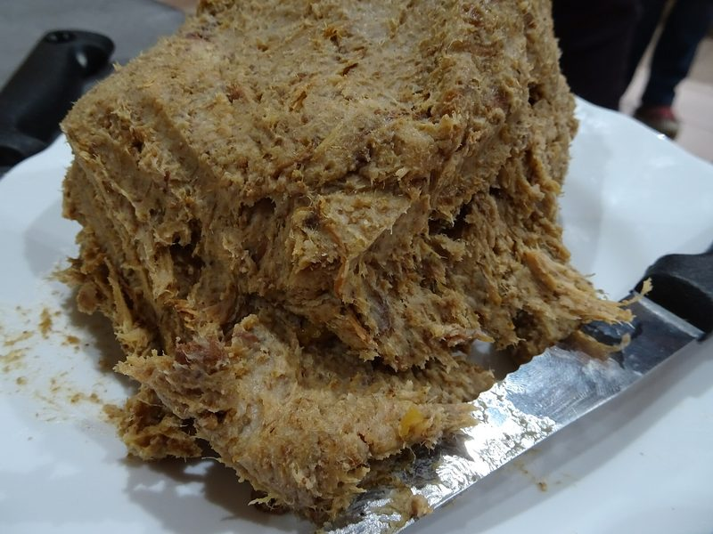

Guides
Les guides régionaux
Explorez la France gourmande région par région. Chaque guide rassemble les spécialités du terroir, leur histoire et où se les procurer — 859 spécialités au total.

Sud-Ouest95 spécialités

Poitou-Charentes20 spécialités

Occitanie77 spécialités

Provence72 spécialités

Auvergne-Rhône-Alpes164 spécialités

Bourgogne-Franche-Comté65 spécialités

Grand Est86 spécialités

Hauts-de-France55 spécialités
Île-de-France28 spécialités

Centre-Val de Loire29 spécialités

Pays de la Loire31 spécialités

Bretagne42 spécialités

Normandie58 spécialités

Corse37 spécialités
Carte Gourmande — les trésors du terroir français, géolocalisés.
Certains liens du site sont des liens d'affiliation : si vous achetez via eux, je perçois une petite commission, sans aucun surcoût pour vous. Cela aide à faire vivre la carte.